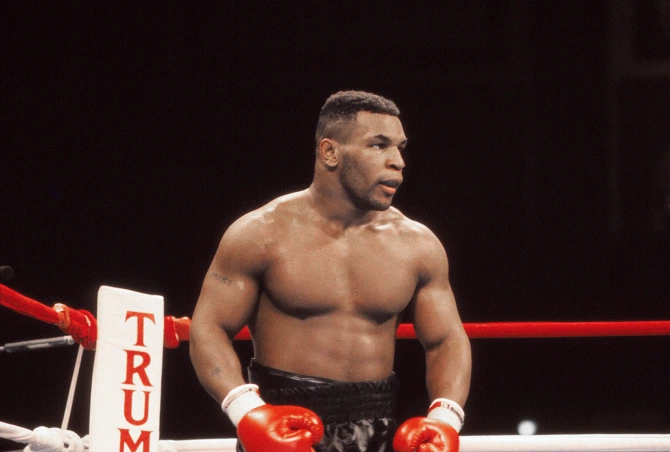
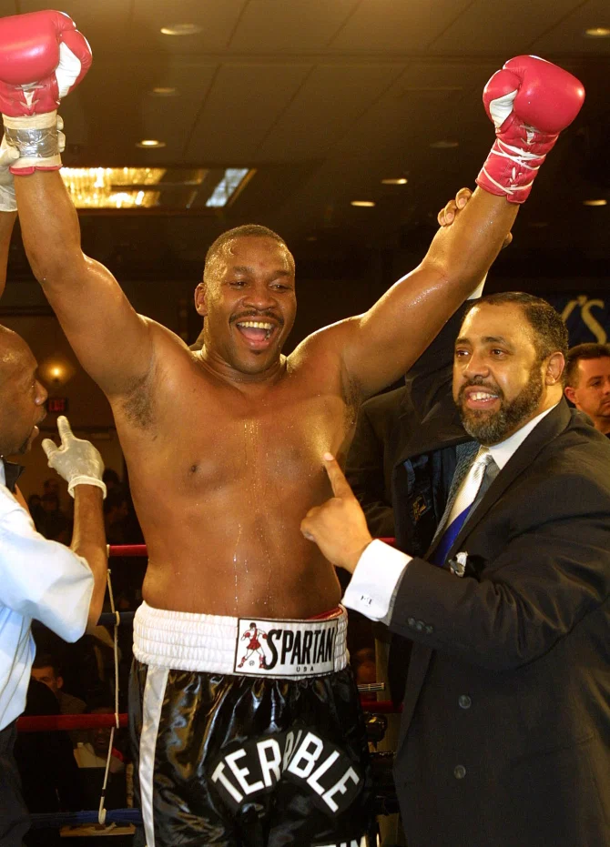

DNBC NEWS
DNBC NEWS
TERRIBLE TIM Mike Tyson would KO Deontay Wilder easily if the pair met in their prime, says ex-heavyweight king Tim Witherspoon
Fiaz Rafiq 23 Jun 2020, 14:57Updated: 23 Jun 2020, 15:25
MIKE TYSON would have KO’ed Deontay Wilder easily if they had met in their prime, former world champion Tim Witherspoon has claimed.
Two-time heavyweight belt holder Witherspoon saw the Bronze Bomber criticise Iron Mike’s record back in March and insist he would have flattened the Planet’s Baddest Man.
Prime Mike Tyson would have an easy night against Deontay Wilder
And the 62-year-old has hit back on Tyson’s behalf and insisted it would be Wilder getting ironed out.
Witherspoon told SunSport: “Mike Tyson would have knocked Wilder out had they fought. I think Mike would have definitely done that.
“I don’t think Wilder’s right hand would be enough at all. It would’ve been an easy knock out for Mike, in fact. Only because Wilder doesn’t have a great defense and he throws that right hand all the time.
“You need more than that in your arsenal to knock out Mike.
“In anything to do with fighting I’d pick Mike all the way. Talking about who could beat who, I think Mike would just walk over him and take him out.
“Wilder is in no position to criticise Mike Tyson or anybody. I think that’s a little bit too fast, just because he has all these knock outs he shouldn’t still be criticizing.”
Tyson Fury is not a massive puncher but he ruined the Bronze Bomber 
Tim Witherspoon has run the rule over Tyson vs Wilder
Witherspoon, who came to England and beat Frank Bruno in 1986, was especially surprised at the timing of Wilder’s verbal dig.
Only a month before he had been bullied all around the MGM Grand ring in Las Vegas by Tyson Fury, who was named after Iron Mike but was never thought to carry serious power.
Witherspoon said Wilder had far bigger things to worry about than settling fantasy fights with a 53-year-old man.
He said: “In terms of which direction he should be going in, I think his management needs to concentrate on him in the gym.
“Instead of Wilder going on Twitter and going on these other platforms criticising Mike Tyson’s record, he needs to get himself together and then do the talking.
“He’s not Muhammad Ali, he’s not George Foreman, so I say get out there and train and good in the ring and then you can talk about Mike Tyson. That’s my opinion.”
Witherspoon fears for his compatriot if he goes into a third fight with the Gypsy King with the same tactics and corner team.
Wilder and head trainer Jay Deas blamed ex-Olympic champ Mark Breland for throwing in the towel for his defeat.
The blitzed team also tried to blame the heavy stage costume Wilder wore to the ring, saying that it sapped all of his energy.
Witherspoon is not interested in their excuses and said: “Where does he go? It’s easy! It’s not rocket science.
“His right hand has been working for him and he’s been beating people before all long, but if you put him against someone who is dangerous, there’s danger in front of them.
“Every time he fights and he gets hit like he did he will go down. If the right opponent gets in front of him, as I said, he’ll get beat.
“It falls down to all these different kinds of opinions and excuses Deontay Wilder was making, all kinds of immature excuses after the fight about what happened.
“So, to me there’s no one in his corner at the level they should be and what he needs.
“This was a disaster waiting to happen all along. He was knocking guys out with his power right hand but when a right person gets in front of Wilder then I think he’s going to get exposed and that’s what happened.
“He’s a really good strong fighter, and I’m not saying he’s really smart because he could learn something from someone. His corner was inexperienced in this particular fight.”